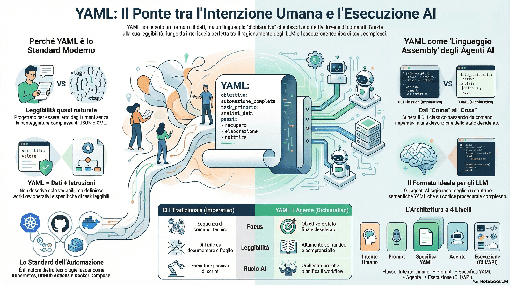

La romanella: quando il lavoro perde struttura
Paolo Volterra ![]()

C’è una parola italiana che non ha equivalenti precisi in altre lingue: romanella. Indica quel modo di fare le cose in modo approssimativo, frettoloso, senza cura — non per malvagità, ma per stanchezza, pressione, abitudine. Un lavoro fatto “alla romanella” è un lavoro che funziona più o meno, che passa, che non fa danni evidenti nell’immediato. Ma che lascia una scia di ambiguità, di informazioni mancanti, di decisioni prese su basi fragili.
La romanella non è pigrizia. Spesso è l’effetto collaterale di un sistema che chiede troppo, troppo in fretta, con troppo poco tempo.
Riconoscere la romanella nei documenti è più semplice di quanto sembri. Bastano alcune domande:
- Chi ha scritto questo report?
- I dati si riferiscono a quale anno? A quale territorio?
- Quale fonte è stata usata?
- Questa è la versione definitiva o una bozza?
Se le risposte non si trovano nel documento in trenta secondi, probabilmente si è davanti a un lavoro fatto alla romanella — non per colpa di chi lo ha scritto, ma perché nessuno ha mai messo in piedi una struttura che rendesse queste informazioni obbligatorie.
Gli esempi sono ovunque.
Un report senza indicazione delle fonti circola in riunione e viene citato in una nota ufficiale. Settimane dopo nessuno ricorda da dove venissero i dati. Se qualcuno li mette in discussione, non c’è modo di verificarli.
Un documento legale senza struttura chiara — senza intestazione, senza data di aggiornamento, senza indicazione della versione — viene modificato più volte da persone diverse. Alla fine nessuno sa quale sia il testo vigente.
Un’analisi dati senza indicazione del dataset viene ripresa dopo sei mesi da un collega che deve aggiornarla. Non trovando la fonte originale, ricomincia da zero — o peggio, usa dati diversi senza accorgersene.
Una presentazione preparata in fretta per una riunione del mattino viene distribuita via email nel pomeriggio. Manca il contesto: chi non era presente non capisce a cosa si riferiscano i grafici, né a quale periodo si riferiscano i numeri.
Torna in cima